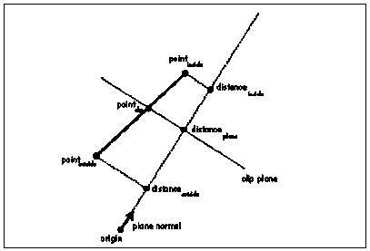

Figure 65.2 Clipping a polygon.
| Previous | Table of Contents | Next |
The fundamental 3-D clipping operation is clipping a line segment to a plane. There are two parts to this operation: determining if the line is clipped by (intersects) the plane at all and, if it is clipped, calculating the point of intersection.
Before we can intersect a line segment with a plane, we must first define how we’ll represent the line segment and the plane. The segment will be represented in the obvious way by the (x,y,z) coordinates of its two endpoints; this extends well to polygons, where each vertex is an (x,y,z) point. Planes can be described in many ways, among them are three points on the plane, a point on the plane and a unit normal, or a unit normal and a distance from the origin along the normal; we’ll use the latter definition. Further, we’ll define the normal to point to the inside (unclipped side) of the plane. The structures for points, polygons, and planes are shown in Listing 65.1.
LISTING 65.1 L65_1.h
typedef struct {
double v[3];
} point_t;
typedef struct {
double x, y;
} point2D_t;
typedef struct {
int color;
int numverts;
point_t verts[MAX_POLY_VERTS];
} polygon_t;
typedef struct {
int color;
int numverts;
point2D_t verts[MAX_POLY_VERTS];
} polygon2D_t;
typedef struct convexobject_s {
struct convexobject_s *pnext;
point_t center;
double vdist;
int numpolys;
polygon_t *ppoly;
} convexobject_t;
typedef struct {
double distance;
point_t normal;
} plane_t;
Given a line segment, and a plane to which to clip the segment, the first question is whether the segment is entirely on the inside or the outside of the plane, or intersects the plane. If the segment is on the inside, then the segment is not clipped by the plane, and we’re done. If it’s on the outside, then it’s entirely clipped, and we’re likewise done. If it intersects the plane, then we have to remove the clipped portion of the line by replacing the endpoint on the outside of the plane with the point of intersection between the line and the plane.
The way to answer this question is to find out which side of the plane each endpoint is on, and the dot product is the right tool for the job. As you may recall from Chapter 61, dotting any vector with a unit normal returns the length of the projection of that vector onto the normal. Therefore, if we take any point and dot it with the plane normal we’ll find out how far from the origin the point is, as measured along the plane normal. Another way to think of this is to say that the dot product of a point and the plane normal returns how far from the origin along the normal the plane would have to be in order to have the point lie within the plane, as if we slid the plane along the normal until it touched the point.
Now, remember that our definition of a plane is a unit normal and a distance along the normal. That means that we have a distance for the plane as part of the plane structure, and we can get the distance at which the plane would have to be to touch the point from the dot product of the point and the normal; a simple comparison of the two values suffices to tell us which side of the plane the point is on. If the dot product of the point and the plane normal is greater than the plane distance, then the point is in front of the plane (inside the volume being clipped to); if it’s less, then the point is outside the volume and should be clipped.
After we do this twice, once for each line endpoint, we know everything necessary to categorize our line segment. If both endpoints are on the same side of the plane, there’s nothing more to do, because the line is either completely inside or completely outside; otherwise, it’s on to the next step, clipping the line to the plane by replacing the outside vertex with the point of intersection of the line and the plane. Happily, it turns out that we already have all of the information we need to do this.
From our earlier tests, we already know the length from the plane, measured along the normal, to the inside endpoint; that’s just the distance, along the normal, of the inside endpoint from the origin (the dot product of the endpoint with the normal), minus the plane distance, as shown in Figure 65.1. We also know the length of the line segment, again measured as projected onto the normal; that’s the difference between the distances along the normal of the inside and outside endpoints from the origin. The ratio of these two lengths is the fraction of the segment that remains after clipping. If we scale the x, y, and z lengths of the line segment by that fraction, and add the results to the inside endpoint, we get a new, clipped endpoint at the point of intersection.
Line clipping is fine for wireframe rendering, but what we really want to do is polygon rendering of solid models, which requires polygon clipping. As with line segments, the clipping process with polygons is to determine if they’re inside, outside, or partially inside the clip volume, lopping off any vertices that are outside the clip volume and substituting vertices at the intersection between the polygon and the clip plane, as shown in Figure 65.2.
An easy way to clip a polygon is to decompose it into a set of edges, and clip each edge separately as a line segment. Let’s define a polygon as a set of vertices that wind clockwise around the outside of the polygonal area, as viewed from the front side of the polygon; the edges are implicitly defined by the order of the vertices. Thus, an edge is the line segment described by the two adjacent vertices that form its endpoints. We’ll clip a polygon by clipping each edge individually, emitting vertices for the resulting polygon as appropriate, depending on the clipping state of the edge. If the start point of the edge is inside, that point is added to the output polygon. Then, if the start and end points are in different states (one inside and one outside), we clip the edge to the plane, as described above, and add the point at which the line intersects the clip plane as the next polygon vertex, as shown in Figure 65.3. Listing 65.2 shows a polygon-clipping function.

Figure 65.1 The distance from the plane to the inside endpoint, measured along the normal.
Figure 65.2 Clipping a polygon.
| Previous | Table of Contents | Next |